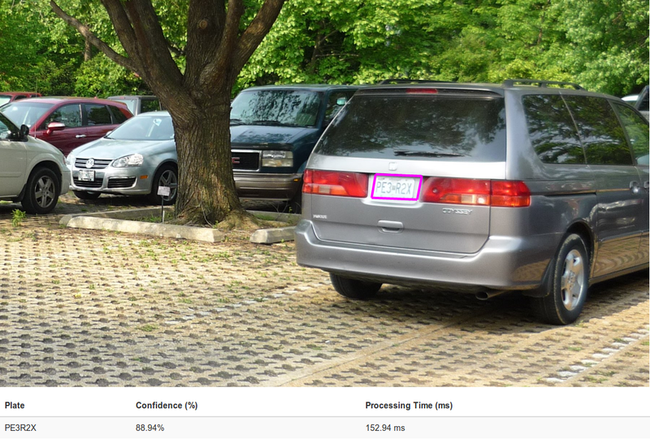
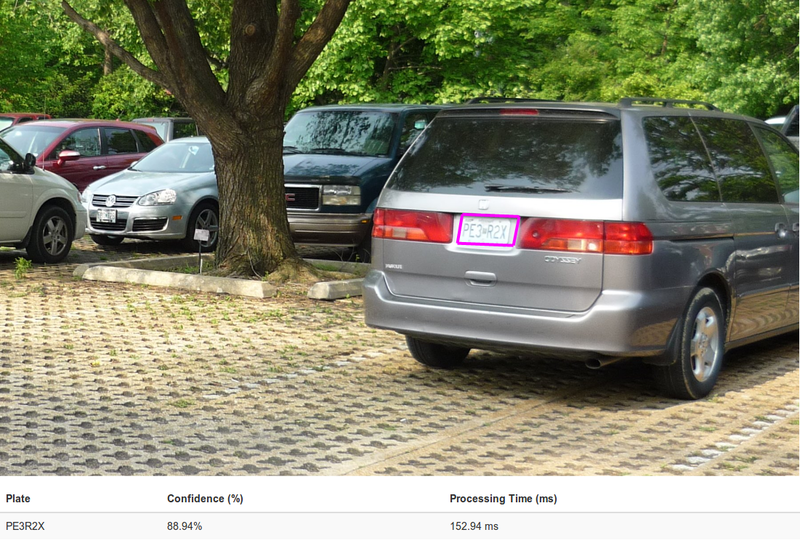
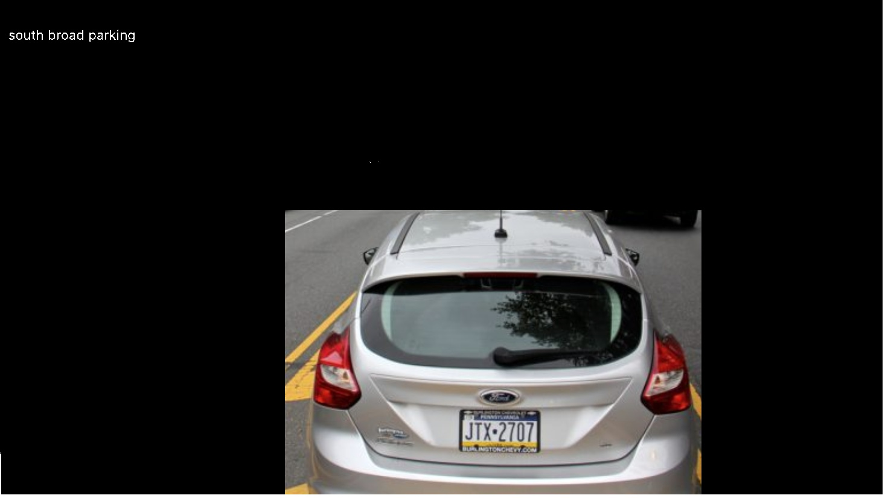
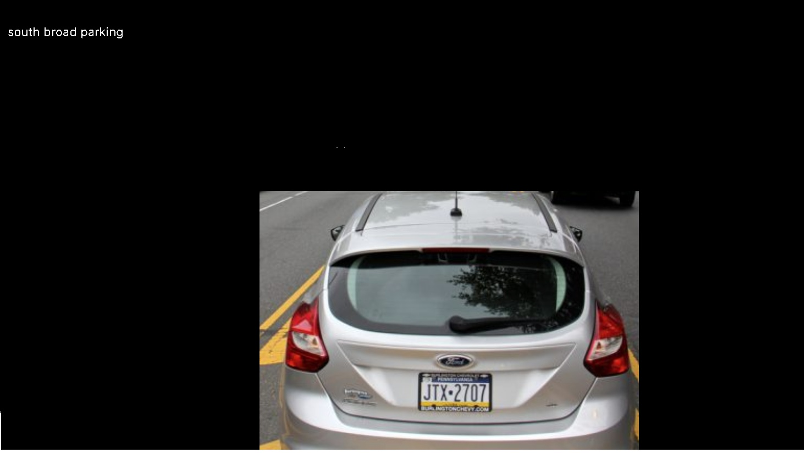

Specialized OCR on Detecting Car Plates (Final Update 12/03/2019)
Jesse Huang (jhuang347), Shuyi Teng (steng6)Fall 2019 Computer Vision: Class Project
Georgia Tech
Github Repo
Midterm Update
Original Proposal
Abstract
An OCR system specialized for detecting license plates in real-life images, with the ability to differentiate between car plates and other texted objects like road signs and shop signs. We will experiment with k-means clustering, graph cut methods and other basic image processing techniques to extract plate images, and then use Open ALPR systems to recognize plate information.
Introduction
Images can be very complex and may contain many different points of interest -
or more importantly, areas that are not interesting. As a result, tools meant
for a specific usage may fail to perform adequately when applied on images with
outside context. This project will take a domain and attempt to rectify this
problem.
In specific, we want to be able to extract the license plate number from cars
without including any superfluous information. Existing approaches exist, but
they take advantage of the fact that the main sources of text are from license
plates. See the figure below as an example from this website.
 

Approach
Our approach is unique in the fact that we will combine different strategies to only extract information from license plates. This will lead to an application that can be used in more generalized models.
We divide our work into two parts, the first part is image segmentation and
the second part is OCR. The first part performs image segmentation on the image,
and output corresponding segments, based on the methods we choose. After saving
segments to a temporary directory, We pass these segments into an OCR model in
order to retrieve license plate tag information.
The idea behind segmenting this process into two areas is to reduce the burden of a single algorithm and to extract additional information from an image. For example, running solely OCR on an image may result in superfluous information. However, in conjunction with an image segmentation algorithm that specifically detects license plates, only the relevant portions of the images are processed.
Because there exists a myriad of image segmentation algorithms, one of our goals was to see which one would preform well in this domain. As such, we chose the following algorithms:
1) Image Segmentation
-
Graph Cut
Graph cut was one of the algorithms that we learned about in class. Because graph cut attempts to segment the image based on a pixels surroundings, and the background of a license plate is monochromatic, then graph cut should be able to segment the license plate away from the rest of the image. -
K-Means
K-Means is another image segmentation algorithm, but is differs from graph cut in the sense that spatial proximity is not a factor in the segmentation. For example, if graph cut was unable to extract the license plate because the letters were a different color than the plate itself, k-means would be better suited to create a segment containing all the letters. -
LPEX
'LPEX' stands for 'License Plate Extraction', is a plate detection system consists of various basic image processing methods, including morphological operations, Gaussian blurs and edge detection. The idea is to get the contours of the picture, and then check if the contour is a character or not, and decide if they all occur in a small region, which means a plate. If yes, then we can extract that particular region of the image, which ideally should be the area of the plate. This method is able to extract plate area well, but failure case do exist (see below).
2) Optical Character Recognition
As for optical character recognition, we chose to leverage an online API to prevent spending too much time developing an adequate OCR application. The API that we chose to use was OpenALPR. OpenALPR is an application that detects license plates from images. However, as seen in the introduction, it can be susceptible to false positives, finding text in areas that are not license plates.
Dataset
One requirement for this project is to collect a dataset. We can leverage the OpenALPR benchmark found here, which is a collection of license plates. We will focus on US license plates. This dataset includes 222 examples of cars and annotations for license plates, so we can easily utilize this dataset to calculate accuracy for a large number of images. To calculate accuracy, we chose to take the number of matching predicted and ground truth annotations and divide that by the number of ground truth annotations and any additional false positives. This would penalize the algorithm for detecting text that is not part of a license plate. More specific techniques to count matching or not matching annotations are included in their respective headings.
Experiments and results
1) KMeans
We use this method and experimented with different numbers of centers. We found out that the more centers we use, the more ‘decomposed’ the images look like, because the area will be divided into more parts, it is hard to read out the plate information. Therefore, in order to save time and reach optimal result, we only use 3 centers. The advantage of using KMeans is that it can potentially filter out texts of different colors (like logos, car paints), which is very useful. See below:
We ran this method on all 222 samples and it took about 45 minutes in total to process. The accuracy is about 92.6%, if we use the formula: Correctly Recognized Character / Total Character. See the more detailed accuracy in the following section.
Here is a good example:
At first glance one could see this is potentially a good result for extracting image segments, because we can differentiate plate information. Also, since plate numbers are usually written in one consistent color, k-means can definitely be a way to approach the problem. However, k-means clustering heavily relies on the initial points that we choose. Even with the same cluster number (k=15 in the example above), each run can render different segmentation results.
Also, when input images have low resolution, it becomes impossible to read the clustered image. See below. Another problem with k-means clustering, due to how it works, is that we cannot filter out segments that are not license plates, so passing these into the OCR algorithm will either yield no results or jumbled results.
Graph Cut
Another algorithm we tried for image segmentation is graph cut using GMM combined with min cut. See sample outputs below. The advantage of graph cut is that it can filter out segments without plates, so that the input image passed to OCR part is guaranteed to have plate information and thus not wasting running time. But this method, too, has its limitations. To use this algorithm, we have to manually select a rectangle area that contains useful information, i.e., foreground object. If algorithm doesn't filter out the plate, we can further provide a "mask" that highlights foreground objects and mask background objects. This method works well when we have only a handful of images to process. When we wanted to provide a bigger dataset for neural network models, it becomes tedious labor work. Therefore, we didn't proceed with this method.
 



LPEX
We further implemented another package called LPEX. It is a system using different image processing tools to extract the plate area. The result will be small images of plates. It uses morphological methods like Top Hat and Black Hat to enhance the image, Gaussian blur with threshold to extract contours and then check each coutour to decide if it looks like a character. If such characters are found, the sustem futher checks if they all occur within a small region (change in area should be samll) and if they are long enough to be plate numbers.
Given a list of such characters' positions, we can generate a rectangle around them and cut the image based on the rectangle's coordinates.
This method successfully extracted 128 out of 222 images, which is around 57.7%. The extracted image are very accurate in capturing the location of the plate.
However, OCR didn't render good results, it is only able to recognize 14 out of 216 images, accuracy is only around 6.5%. Even though the images we put in are good examples of plates. The reason might be first, the input images are too small, given it is only a plate. Secondly, the OCR system we used probably did not expect the input image to be an extracted plate image. If it treats the plate images to be a normal image with cars, surroundings, then it is possible that the recognition rate is low.
For example, the OCR is able to recognize the plate number in the upper image, but not the one down.
Qualitative Results
Pure OCR
Accuracy: 204/222 = 91.9%False Positives: 0
False Negatives: 18/222 = 8.1% (Plates that were not detected/recognized)
K-Means Approach
Accuracy: 292/626 = 46.65%False Postives: 182/626 = 29.1% (Plates detected that were not actually plates)
False Negatives: 152/626 = 24.28% (Plates that were not detected/recognized)
Character by Character Accuracy: 92.6%
LPEX Approach
Accuracy: 14/216 = 6.48%Car Plate Detection Rate: 128/222 = 57.7%
Conclusion and Future Steps
This project briefly explores some image segmentation techniques and utilize OCR tools to detect car plates in images. The results are not the best and each methods has its limitations. Kmeans are subject to initial points, cannot work on low-resolution pictures, graph cut required human practice. Although LPEX did well in extracting plates, the OCR results were not so good. Here are some thought we have as to how to improve:- To save time but preserve accuracy, we can try different OCR tools, which might be more lightweight but has similar results.
- Right now identifying areas containing plates for Graph cut methods is manual. And to calculate character accuracy is manual, too. Are there ways to replace labor and let the system to do the work?
- To improve plate detection result by training our own model. We can utilize Faster-CNN or YOLO algorithms.
- We can use confidence of OCR and image segmentation to generate a combined confidence.
References
1. Interactive Foreground Extraction using GrabCut Algorithm2. Introduction to Image Segmentation with K-Means clustering
3. OpenALPR Cloud API
4. Number Plate Datasets
5. License plate detection with OpenCV and Python
6. LPEX - License Plate EXtractor